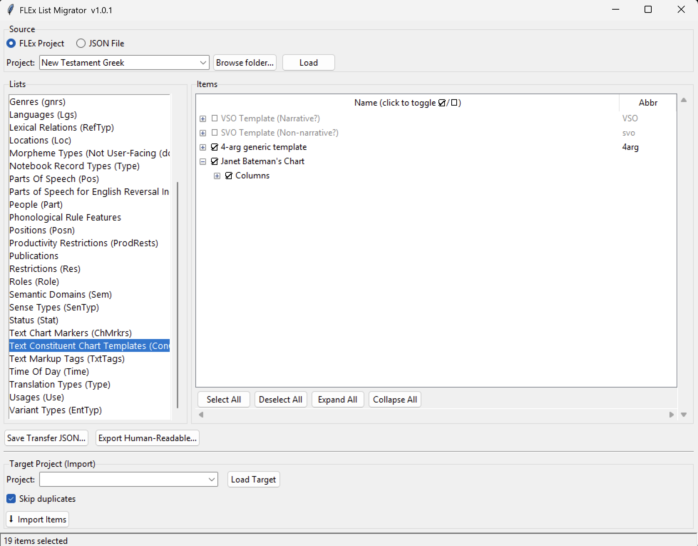

Move possibility list items — Parts of Speech, Semantic Domains, Text Markup Tags, custom lists, and more — between FieldWorks Language Explorer (FLEx 9) projects. Share a curated list with a colleague, or copy your carefully built categories from one project to the next.
Windows only — requires FieldWorks Language Explorer 9. Close FLEx before running.

Browse a project's lists, check the items you want — including nested items like discourse chart templates and their columns — then export or import. (19 items selected here.)
What it does
Everything you need to move lists
FLEx keeps your categories, terms, labels, chart templates, and more in named possibility lists — not your linguistic data itself, but the vocabulary you tag it with. This tool lets you copy exactly the list items you want from one project to another, with sensible matching and a safe, transactional import.
Browse any list
Open a source FLEx project and browse any possibility list — Parts of Speech, Semantic Domains, Text Markup Tags, Text Constituent Chart Templates, custom lists, and more. Tick exactly the items you want to move; Select All, Deselect All, Expand All, and Collapse All make big lists quick.
Export to a portable file
Save Transfer JSON… writes your selection to a compact file you can email or share. Anyone with this tool can load it as a source — no live FLEx project required to pass items around.
Import with smart matching
Load a target project and click Import Items. Built-in lists are matched automatically by GUID; custom lists are matched by name. Keep Skip duplicates on to avoid re-adding items the target already has — so items land where they belong.
Human-readable export
Produce a nicely formatted HTML page (lists on separate tabs, collapsible) or a plain-text dump of any list or selection — perfect for documentation, review, or sharing with a non-technical colleague.
Safe, transactional writes
Every import is wrapped in a single transaction. If anything goes wrong, nothing is half-written to your project. Your source project is only ever read, never modified.
No install, no dependencies
A single portable executable. It bundles everything it needs — you don't have to install Python, FLExTools, or flexlibs separately. Just download and run.
Step by step
How it works
A typical migration takes just a few clicks. FLEx must be closed while the tool has a project open.
Choose a source
Point the tool at a FLEx project folder and click Load — or load a previously saved .json file as your source instead.
Pick a list and check items
Select any possibility list from the source and tick the items you want to move. Hierarchical lists expand so you can check nested items — a discourse chart template and its columns, a semantic domain and its subdomains. Select as few or as many as you like.
Export or import
Save Transfer JSON… writes the checked items to a portable file to share; or load a target project below and click Import Items to add them directly into its matching list. Export Human-Readable… produces an HTML or plain-text version instead.
Review the result
Matching is automatic (by GUID for built-in lists, by name for custom lists). The import runs as one transaction, so your project stays consistent.
Close FLEx first. FLEx locks its project databases while it is open. Quit FieldWorks Language Explorer completely before loading a source or target project in the List Migrator.
Get it
Download
A portable Windows executable — no installer. Download, double-click, and run.
Windows (portable)
FLEx List Migrator (.exe)Latest release, v1.0.1. Requires FieldWorks Language Explorer 9 installed on the same machine.
First run on Windows: because the app is a small independent project, Windows SmartScreen may show a "Windows protected your PC" warning. Click More info → Run anyway. The download is served directly from the project's GitHub releases.
Before you start
Requirements
Windows. FieldWorks Language Explorer is Windows-only, and so is this tool.
FieldWorks Language Explorer 9 installed on the same machine — download from SIL (opens in a new tab). The tool reads and writes FLEx data through the installed FieldWorks components.
FLEx must be closed while you have a project loaded in the List Migrator.
No separate install of Python, FLExTools, or flexlibs is needed — the portable .exe bundles them.
Only sharing a JSON file (not touching a live project)? You still need this tool to open it, but you don't need FLEx to be installed just to load and inspect a saved .json source.
For developers
Running & building from source
The app is written in Python with a Tkinter GUI. FLEx data access is provided by flexlibs.
See the README on GitHub (opens in a new tab) for the full file overview and the FLExTools testing module used to validate the read/write paths against a live project.
Questions
Frequently asked
Does this modify my source project?
No. The source project (or JSON file) is only ever read. Changes are written only to the target project you explicitly load and import into — and that write is wrapped in a single transaction.
Which lists can I move?
Any FLEx possibility list — the categories, terms, labels, and chart markers/templates FLEx stores in named lists: Parts of Speech, Semantic Domains, Text Markup Tags, chart markers, Academic Domains, and your own custom lists, among others.
How are items matched between projects?
Built-in lists are matched by their stable GUID, so a "Semantic Domains" list in one project maps to the same list in another. Custom lists are matched by name.
Can I share lists with someone who doesn't have my project?
Yes. Export your selection to a portable JSON file and send it. The recipient loads that file as a source in their own copy of the tool and imports it into their project.
Do I need FLExTools or flexlibs installed?
No. The portable .exe bundles everything. You only need FieldWorks Language Explorer 9 itself installed on the machine.
Is it free?
Yes — free and open source under the AGPL-3.0 license. Source code is on GitHub.